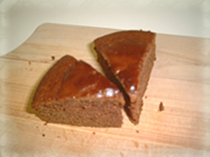
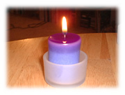
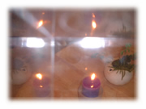

2月の日記(2)
[前の日記]
[過去の日記一覧へ]
[次の日記]
新しいものは上になります。下から読んでね(^^)
2002年2月20日(水) くもり
『シークレットチョコレートケーキ』
 さて、ケーキとかお菓子を作るのはわりと好きなんだけど、こんなケーキを作りました。その名も、「シークレットチョコレートケーキ」。小林カツ代のお菓子の本に載っています。なにがシークレットって、マヨネーズを使うんですね。
最初、作り方を読んだときはあまり作る気はしなかったんだけど、バターを切らしてしまったので作ってみました。マヨネーズを切らすことって今ではほとんどないけど、バターってお菓子以外には使わないんですよね。ちなみにパンを食べるときは、マーガリンの"I can't believe, it's not butter"（商品名--すごい商品名ですよね(^^;)を使ってます。
作り方を書いておきますね。必要な材料は太字にしてます。
♪シークレットチョコレートケーキ♪
(1) 型(20cm-21cm)にバターを薄く塗る。オーブンを200Cにあたためておく。
(2)
小麦粉(200g)、ココア(大さじ4)、ベーキングパウダー(小さじ1)、重ソウ(小さじ1)
をふるいにかける。
(3)
マヨネーズ(カップ3/4)
と
牛乳(カップ1)
を泡立て、
砂糖(100g)
を加えてよくまぜ、(2)の粉類を高い位置から一気にふるい入れてよくまぜる。
(4) (1)の型に流し入れ、200Cのオーブンで５分焼き、180Cに下げて20分から30分焼く。
(5) 手でさわれるくらいになったら、型からはずして冷す。
2002年2月17日(日) くもり
『久しぶりの』
昨日、ニューヨークに住んでいる友達が泊まりに来ていた。夫と３人であっというまに時間が過ぎた。私がニューヨーク州の大学を卒業してから３年以上たっているんだなぁ。久しぶりにいろいろおしゃべりした。そういえば、留学中はよく連絡をとりあっていたけど、カリフォルニアに来てからはお互いクリスマスカードくらいで音信不通の状態だった。でも一度仲のよくなった人って、長いこと連絡をとらなくても、ブランクなんてなかったような会話ができるから楽しい。
彼女はスキューバダイビングにいくといって、今朝早く友達と出かけていった。すごいバイタリティだ。この寒い中を。私は雨でジョギングがキャンセルになったので、２度寝した(^^;
2002年2月14日(木) くもり
『キャンドル』
 ここのところ、よく、ろうそくをつけます。一時期、ろうそくが欲しくなって、時々、買ってたんだけど、もったいなくて使う気にはなれませんでした。でも、使いはじめるとやみつきになるかも(^^)

新しいものは上になります。下から上に読んでね(^^)
[前の日記]
[過去の日記一覧へ]
[次の日記]
[ホーム]